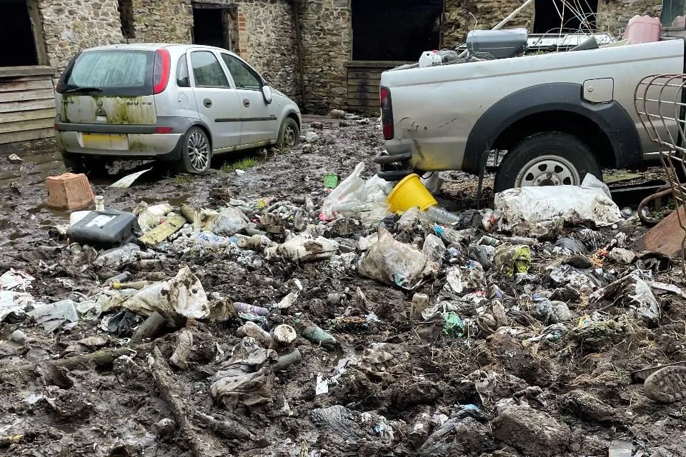

英国・デヴォン／2024年の現場調査／英国政府・州の発表
子牛が横たわっていたのは、糞尿とごみの中だった
母牛を亡くした子牛が、糞尿と生活ごみの中に横たわっていた。2024年3月、英国デヴォンの農場に立ち入った調査員が見た光景だ。
牛舎はどこも糞尿で覆われ、牛が横になれる乾いた場所は一か所もなかった。生きている牛は、ほかの牛の死骸や廃材の間で草を食べていた。
調査員は農場主に、すぐに餌を増やし、病気の牛に手当てをするよう指示した。その年に再び訪ねたときも、病気の牛は治療を受けていなかった。2025年、裁判所は農場主に、今後は家畜の飼育に関わることを禁じた。
写真を見る（動物の傷や飼育環境を扱います）

この記述を原資料で確かめる
「母牛を亡くした子牛が、糞尿と生活ごみの中に横たわっていた。」
英国環境庁・動植物衛生庁（2025年10月30日）。「Joint visits uncover catalogue of concerns」中、病気や飢えで死んだ動物に続いて子牛が登場する段落。前後の段落に寝床・給餌・再訪の記録。 原資料を開く
再訪時の記述は農場の病畜全体について。子牛がその後どうなったかは発表に記載がない。